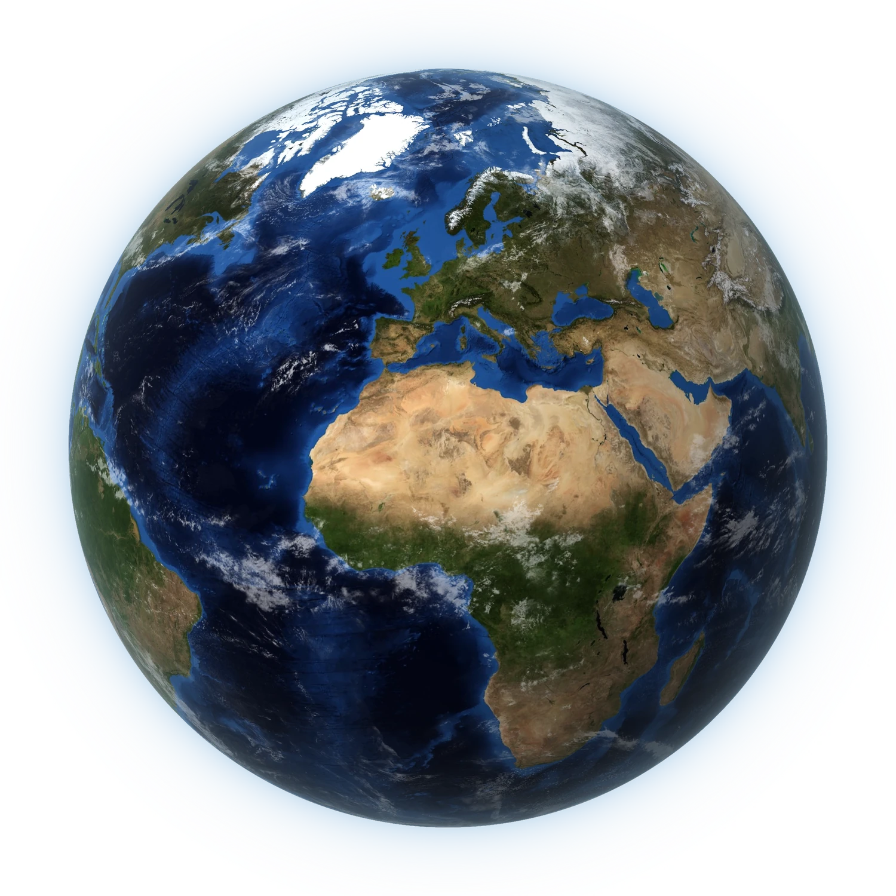
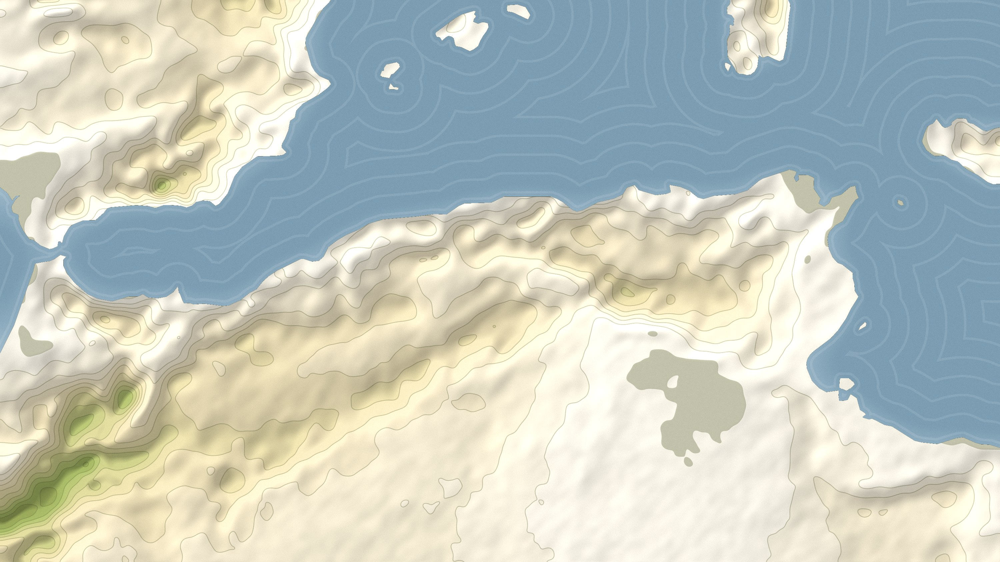
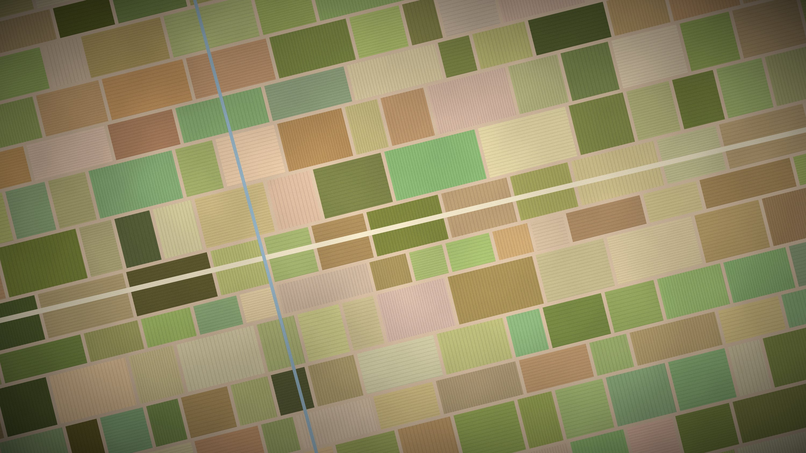

Set your priorities
Pick a region and enter the rotation you grow today.



NASA Space Apps Challenge 2026
From space to soil: NASA data
in a farmer's hand.
Earth image: NASA Blue Marble
Zooming in ·
NASA POWER · ISRIC SoilGrids (250 m) · example values
Zooming in · one farm
Plain words · large buttons · Arabic, French, English
Same app · bigger screen
One web app · no install · no account
Your priorities
My crops · water need
Best rotation for you
Example values · supports local expertise
Best rotations for you
Example values · this tool supports local expertise, it does not replace it.
→ or click to advance · ← back · F fullscreen